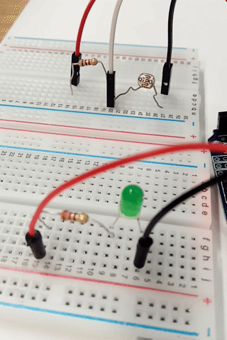

Light it UP!
Nightlight: Stage 3
1) Now, go back to the Arduino software. Open the nightlight.ino file you were using before and delete the text in the window. Copy and paste the following text (code) into your Arduino software, replacing the ‘985’ used in the example code in the line (light_reading < 985) with the number you wrote down in the previous stage for what the light reading was when it was sitting in front of you:
int LED_Pin = 3; //change to the pin your LED is connected to int LDR_Pin = A1; //change to the pin your LDR is connected to int light_reading; void setup() { pinMode(LED_Pin, OUTPUT); pinMode(LDR_Pin, INPUT); Serial.begin(9600); } void loop() { light_reading = analogRead(LDR_Pin); Serial.println(light_reading); //displays the light reading value if(light_reading < 985) { //change to your light value in normal conditions digitalWrite(LED_Pin, HIGH); //turns LED on } else digitalWrite(LED_Pin, LOW); //turns LED off delay(500); }
2) Using the software, go Sketch > Verify/Compile to compile the code and save it as “nightlight.ino”. Next go Sketch > Upload to send it to your Arduino board. Once this has been completed, and program should return “Done uploading.”
3) You should now have a fully operational nightlight! Move your hand over the LDR to check that the LED turns on, and that it turns off when you move your hand away.
Power it UP
Once your nightlight is fully operational, you can unplug it from the mini-USB cable and make it battery powered using the battery cable and the 9V battery. This allows the night light to be fully portable, and you can now set it up anywhere you wish!
Not Working? Try This!
If your nightlight is not working, please follow these steps to find out why:
- Check your code.
- Does it compile? If not check the brackets, extra letters etc that are out of place.
- Is it identifying the correct LED_Pin and LDR_Pin numbers?
- Check the connections on the breadboard.
- Check your breadboard looks like the picture at the end of step 7. If it does and your light is still not working, check that:
- All the pins are pushed in.
- Try using a different LDR and different LED.
- Try using different red, black and white cables.
- If none of that gets your light working, ask your teacher/demonstrator for assistance.